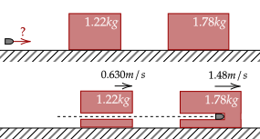
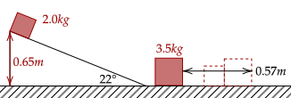

So far, we have been using a general, intuitive term of collision, however we will generalize it as shown.
This definition of a collision means that they need not collide physically but only need to exert forces. Further, we will assume before and after a collision that they don't interact anymore; no more force is exerted by any objects on any other objects in a collision.
We've already dealt with problems involving these collisions in one dimension. Here, we increase the complexity a little more, and then we will jump into two-dimensional collisions, which function about the same way as two-dimensional motion.
Exercise 1
(LSM E9.42) A 2000-kg railway freight car coasts at 4.4 m/s underneath a grain terminal, which dumps grain directly down into the freight car. If the speed of the loaded freight car must not go below 3.0 m/s, what is the maximum mass of grain that it can accept?
Solution
We will let be the mass of the cart with grain and be the mass without grain. Thus, to get the mass of the grain, we need . We set up the momentum conservation equation below.
We substitute this value for .
Setting our final velocity to the minimum 3.0m/s, which gives us the maximum grain, we have this.
Exercise 2
(HRK E6.19) A space vehicle is traveling at 3860 km/h with respect to the Earth when the exhausted rocket motor is disengaged and sent backward with a speed of 125 km/h with respect to the command module. The mass of the motor is four times the mass of the module. What is the speed of the command module after the separation?
Solution
We let subscripts be for the command module and for the motor. Since the motor is four times as massive as the module, their masses are and respectively.
They initially coast as one, so their total mass is .
We need the speed of the command module with respect to Earth, so we have to use relative motion.
It is said that the motor was moved "125 km/h with respect to the command module", so that means its relative to the velocity of the command module. Setting up the relative motion, we have the following.
We now have everything we need to solve for the speed of the command module.
Problem 1
(HRK P6.19) A 3.54-g bullet is fired horizontally at two blocks resting on a frictionless tabletop, as shown below. The bullet passes through the first block, with mass 1.22 kg, and embeds itself in the second, with mass 1.78 kg. Speeds of 0.630 m/s and 1.48 m/s, respectively, are thereby imparted to the blocks.

For simplicity, assume the mass removed by the bullet is negligible. Thus, find the speed of the bullet immediately after emerging from the first block and the original speed of the bullet.
Solution
We let subscripts be for the big box, for the small box, and for the bullet. To easily do calculations, we will use grams here, so the big and small box has masses 1780g and 1220g respectively.
To get the speed of the bullet, we will use the fact that the bullet at the end is embedded in the block, which means they both move at the same velocity.
Now, we substitute to get the bullet's initial velocity; in other words, the velocity after going out of the small box.
Now, we do another equation to get the initial velocity of the bullet before it even goes in the small block. This initial velocity becomes the final velocity in this equation.
Substituting the values, we have the following.
These problems below have a little kick to them.
Problem 2
(HRK P6.20) A 2.0-kg block is released from rest at the top of a 22° frictionless inclined plane of height 0.65 m. At the bottom of the plane it collides with and sticks to a block of mass 3.5 kg. The two blocks together slide a distance of 0.57 m across a horizontal plane before coming to rest. What is the coefficient of friction of the horizontal surface?

Solution
First, we need the acceleration down the plane. Then, we need the velocity of the box at the bottom of the plane. Then, we need to get the velocity of the two blocks together using conservation of momentum. Finally, we get the coefficient of friction by noting the deceleration of the blocks.
The first part is simple enough, we've done this dance a lot of times before. The force acting on the block pushing it down the plane is the parallel component of the weight.
Now, for the velocity at the bottom of the slope, we will first get the displacement of the block along the slope, which we will use trigonometry. The 22° angle is opposite the height, thus we have the following relation.
We now use the time-independent formula to get the final velocity, noting the initial velocity is at rest.
Great, now we will use the conservation of momentum to get the initial velocity of the two blocks as they collide. We will call the bigger block as , as usual.
Now, we will use the time-independent formula again to get the acceleration. Here, the initial velocity is the final velocity above, and the final velocity is at rest, so it drops out.
This acceleration is done by the friction force, which depends on the normal force. The normal force here is simply the sum of both of their masses times gravity. This force is retarding, so we set it as negative.
Finally, we have a somewhat simple expression. Plugging in, we get our value for the coefficient of friction.
We will dryly note that the final velocity of the box on the ramp did not depend on the angle. Why is that? We will find out one day.
Problem 3
(LSM P9.115) Two projectiles of mass and are fired at the same speed but in opposite directions from two launch sites separated by a distance . They both reach the same spot in their highest point and strike there. As a result of the impact they stick together and move as a single body afterwards. Find the place they will land in terms of , , and .
Solution
We first state the formula for the time until the projectile reaches its apex. We will also note that this is the same time it takes to hit the ground.
The two will hit in the middle and move as one. Without loss of generality, we let and thus it determines where the projectile will go, and also without loss of generality that is shot going to the right.
Thus, we have the following. We set one as positive and one as negative.
We now multiply this velocity by the time it takes to go down to the ground, which is precisely the time we noted up there. This gives us the distance it travelled after collision.
To fix the fact there are lots of variables we don't know, we will note that in the time it takes to go to the apex, it goes half the distance.
This is, surprisingly, exactly what is above. We substitute in to get this.
Now, this is nice, however it isn't over yet; this collision happens at , so we will add that to get where the projectile landed.
In motion in two dimensions, we noted that we can separate motion into two cases of one-dimensional motion. We can do the same here.
The conservation of momentum can be separated into the two cases, shown below. All we then need to do is compute for both cases and do trigonometry or use the pythagorean theorem to get the direction or magnitude of whatever it is we need to find.
Once again, we will have to deal with vector decomposition, but we've done this lots of times before so it isn't going to be that bad.
Exercise 3a
(HRK E6.25) Two objects, A and B, collide. A has mass 2.0 kg, and B has mass 3.0 kg. The velocities of the objects are the following.
What is the final speed of object B?
Solution
We first use conservation of momentum in the x-axis.
We do the same thing for the y-axis. However, we note that the velocity of object A before and after collision is the same, so we drop them at both sides.
We now use the pythagorean theorem to get the magnitude of velocity, or speed of object B.
Exercise 3b
(HRK E6.25) What is the direction of the final velocity of object B?
Solution
We will use arctangent to get the angle.
Thus, the direction of the velocity is 51° upwards from the +x axis.
Exercise 4
(LSM P9.54) A billiard ball, labeled 1, moving horizontally strikes another billiard ball, labeled 2, at rest. Before impact, ball 1 was moving at a speed of 3.00 m/s, and after impact it is moving at 0.50 m/s at 50° from the original direction. If the two balls have equal masses of 300 g, what is the velocity of the ball 2 after the impact?
Solution
Since both balls have the same mass, we might as well drop the subscripts for them. We will start with the horizontal component of momentum first.
The 50° angle is opposite and adjacent to the vertical and horizontal component of the final velocity of the first ball respectively. Thus, we can use trigonometry.
We now do the same thing with the vertical component.
We first get the magnitude of velocity.
For the angle, we use arctangent, as usual.
The following problem below shows one detail that you may not notice.
Problem 4a
(HRK P6.12a) Two balls A and B, having different but unknown masses, collide. A is initially at rest and B has a speed v. After collision, B has a speed v/2 and moves at right angles to its original motion. Find the direction in which ball A moves after the collision.
Solution
We will first set the initial velocity of B to be in the x-axis, then since it moves at a 90° angle afterwards, it moves in the y-axis. We first get the horizontal component.
Initially, B has a speed of v, but then moves only in the y-axis, so it has no velocity afterwards.
We do the same thing for the y-axis.
We now use the arctangent function to get the direction.
The angle is thus 26.57° down from the original direction of motion. Surprisingly, the masses of the objects are not needed to compute this, just the direction where one object goes and their speeds.
Problem 4b
(HRK P6.12b) Can you determine the speed of A from the information given?
Solution
No. Simply, we need the masses of the objects. I leave the more rigorous explanation why to the most omniscient reader.